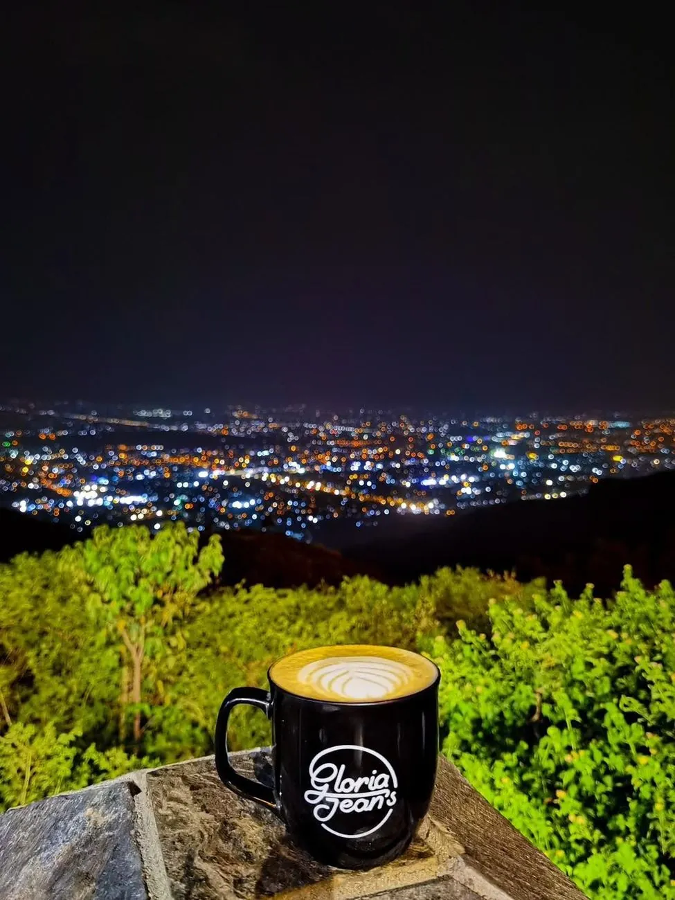
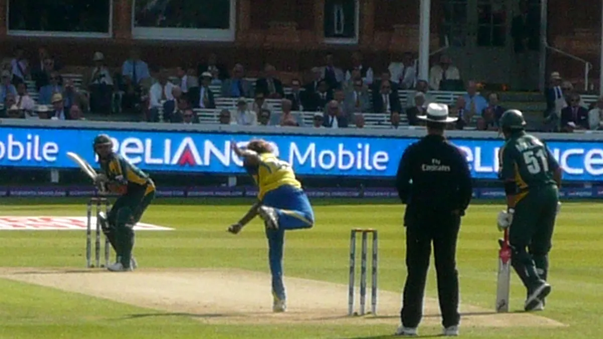

People & traditions
Photo: Baharwassan / Wikimedia Commons · CC BY-SA 4.0
People & traditions
Photo: Baharwassan / Wikimedia Commons · CC BY-SA 4.0
Explore Pakistan
Six chapters of Pakistan — culture, literature, land, sport, history and showbiz — written like a book you can wander through.
People & traditions
Photo: Baharwassan / Wikimedia Commons · CC BY-SA 4.0

Land & landscape Photo: islamabadians
Lord’s 2009 Photo: Djr xiSports
The 2009 T20 World Cup — Shahid Afridi, Younis Khan and the side that won at Lord’s.
Open archive →Showbiz
Mahira Khan, Fawad Khan and the dramas, films and voices that shaped Pakistani entertainment.
Explore Showbiz →